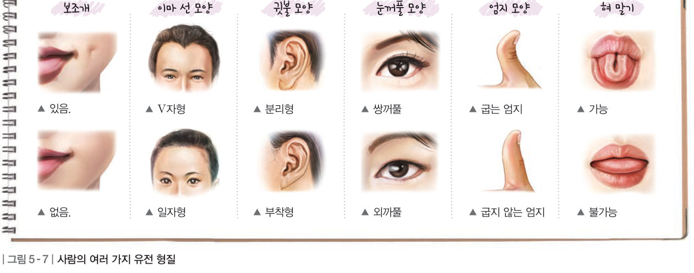
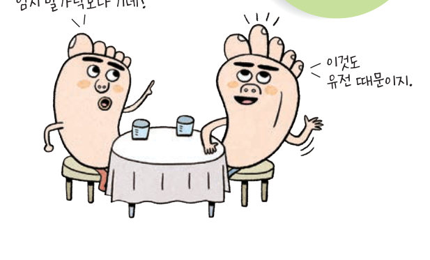
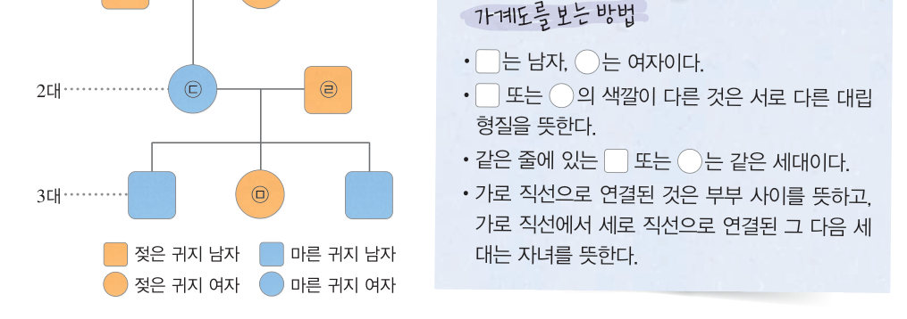
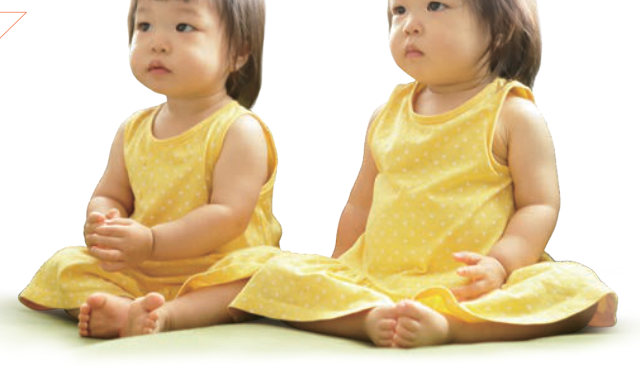
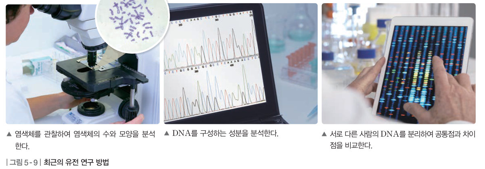
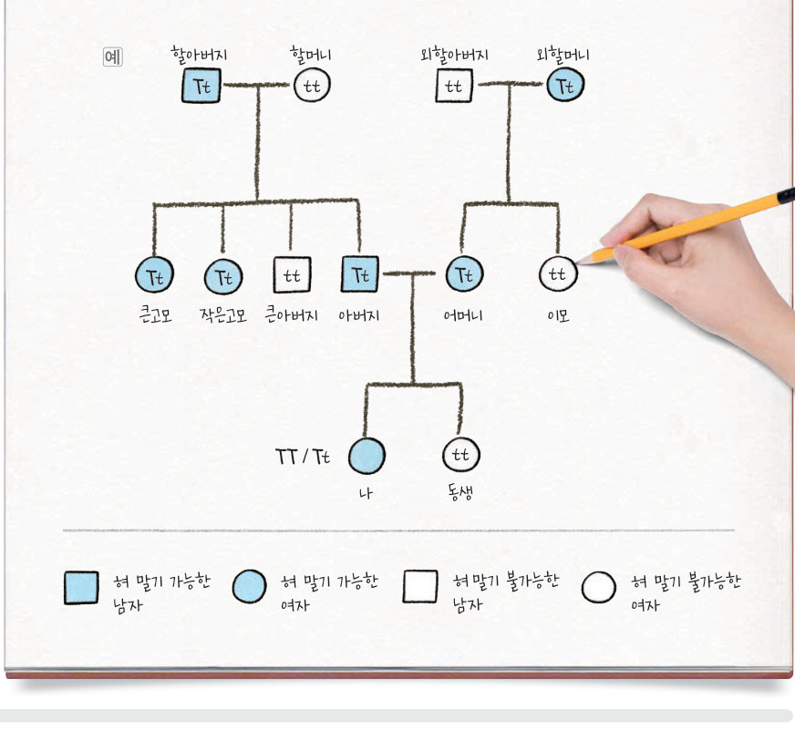

사람의 유전 형질에는 어떤 것이 있을까? 나의 유전 형질 카드를 채우고, 가계도 탐정이 되어 귀지·유전병·주근깨 가계도에서 우열 관계와 유전자형을 밝혀 보자. 쌍둥이 연구와 최근의 DNA 분석도 알아보자.
사람은 키, 혈액형, 발가락 길이를 비롯한 여러 가지 형질을 부모에게서 물려받는다. 사람의 유전 형질은 눈꺼풀 모양처럼 대립 형질이 뚜렷하게 구분되는 것도 있지만, 키나 피부색처럼 대립 형질이 뚜렷하게 구분되지 않는 것도 있다.
사람은 한 세대가 길고, 자손의 수가 적으며, 교배 실험이 불가능하다. 또, 대립 형질이 복잡하고 환경의 영향을 많이 받는다. 따라서 사람의 유전 현상은 완두와 같은 방법으로 연구하는 것이 어려우며, 가계도 조사, 쌍둥이 연구 등을 이용한다.
가계도는 집안의 가족 관계를 그림으로 나타낸 것으로, 가계도를 조사하면 특정 형질이 어떻게 유전되는지 알 수 있다. 멘델의 유전 원리에 따르면 우성 형질 사이에서는 우성 형질인 자녀와 열성 형질인 자녀가 모두 태어날 수 있다. 반면, 열성 형질 사이에서는 열성 형질인 자녀만 태어난다. 따라서 특정 형질의 유전에서 부모와 다른 형질을 지닌 자녀가 태어나면 부모에서 나타난 형질이 우성이고, 자녀에서 나타난 형질이 열성이다.

사람의 형질은 유전되어 나타나지만, 환경의 영향을 받아 나타나기도 한다. 쌍둥이를 연구하면 유전과 환경이 특정 형질에 미치는 영향을 알아볼 수 있다. 특히, 서로 다른 환경에서 자란 1란성 쌍둥이(하나의 수정란이 난할 과정에서 분리되어 각각 발생한 쌍둥이, 유전자 구성이 같음)와 같은 환경에서 자란 1란성 쌍둥이의 특정 형질을 비교하면 그 형질이 유전과 환경 중 어느 것의 영향을 더 크게 받는지 알 수 있다.
최근에는 염색체를 분석하거나 DNA를 직접 분석 및 비교하여 사람의 유전 현상을 연구한다. 염색체의 수와 모양을 분석하면 염색체 이상으로 발생할 수 있는 유전병을 진단할 수 있다. DNA를 분석하면 특정 형질과 관련된 유전자의 정보를 얻을 수 있다.



| 평가 기준 | 스스로 평가 |
|---|---|
| 탐구 기능 혀 말기 유전의 가계도를 옳게 분석 및 해석하였는가? | |
| 탐구 기능 자신의 의견을 논리적으로 전달하였는가? | |
| 인성 탐구 활동에 적극적으로 참여하였는가? |
| ⑴ 한 세대가 길다. | |
| ⑵ 자손의 수가 많다. | |
| ⑶ 대립 형질이 단순하다. | |
| ⑷ 교배 실험이 불가능하다. | |
| ⑸ 대립 형질이 환경의 영향을 많이 받는다. |
| 평가 기준 | 스스로 평가 |
|---|---|
| 사람의 유전 형질을 알고, 사람의 유전 현상을 연구하는 방법을 설명할 수 있다. | |
| 가계도를 해석하여 사람의 유전 현상을 설명할 수 있다. |